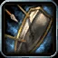
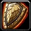
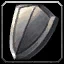

Paladin – Deep Protection tank
Tank Split 5 / 39 / 7 (Holy / Protection / Retribution)
Deep Protection to Shieldsworn with Holy Shield, Reckoning and Iron Creed, full Toughness and Anticipation, plus Deflection from Retribution and Divine Strength from Holy.
Talents in this build
Hover or tap a talent to see what it does at that rank.
Holy · 5
- Divine Strength 5/5
Protection · 39

Redoubt 5/5- Precision 3/3
- Guardian's Favor 2/2
- Sacred Duty 2/2
- Templar's Bulwark 1/1
- Shield Specialization 2/2
- Toughness 5/5
- Swift Judgement 1/1
- Improved Righteous Fury 3/3
- Anticipation 5/5
- Holy Shield 1/1
- Reckoning 5/5

Iron Creed 3/3
Shieldsworn 1/1
Retribution · 7
- Deflection 5/5
 Improved Judgement 2/2
Improved Judgement 2/2
Leveling order
level 10 → 60
One talent point per level from 10 to 60. Press play to watch the build fill in, or switch to Text for the list.
| Level | Talent | Tree |
|---|---|---|
| 10 | Redoubt 1/5 | Protection |
| 11 | Redoubt 2/5 | Protection |
| 12 | Redoubt 3/5 | Protection |
| 13 | Redoubt 4/5 | Protection |
| 14 | Redoubt 5/5 | Protection |
| 15 | Precision 1/3 | Protection |
| 16 | Precision 2/3 | Protection |
| 17 | Precision 3/3 | Protection |
| 18 | Guardian's Favor 1/2 | Protection |
| 19 | Guardian's Favor 2/2 | Protection |
| 20 | Shield Specialization 1/2 | Protection |
| 21 | Shield Specialization 2/2 | Protection |
| 22 | Templar's Bulwark 1/1 | Protection |
| 23 | Toughness 1/5 | Protection |
| 24 | Toughness 2/5 | Protection |
| 25 | Swift Judgement 1/1 | Protection |
| 26 | Improved Righteous Fury 1/3 | Protection |
| 27 | Improved Righteous Fury 2/3 | Protection |
| 28 | Improved Righteous Fury 3/3 | Protection |
| 29 | Anticipation 1/5 | Protection |
| 30 | Holy Shield 1/1 | Protection |
| 31 | Reckoning 1/5 | Protection |
| 32 | Reckoning 2/5 | Protection |
| 33 | Reckoning 3/5 | Protection |
| 34 | Reckoning 4/5 | Protection |
| 35 | Reckoning 5/5 | Protection |
| 36 | Iron Creed 1/3 | Protection |
| 37 | Iron Creed 2/3 | Protection |
| 38 | Iron Creed 3/3 | Protection |
| 39 | Anticipation 2/5 | Protection |
| 40 | Shieldsworn 1/1 | Protection |
| 41 | Deflection 1/5 | Retribution |
| 42 | Deflection 2/5 | Retribution |
| 43 | Deflection 3/5 | Retribution |
| 44 | Deflection 4/5 | Retribution |
| 45 | Deflection 5/5 | Retribution |
| 46 | Retribution | |
| 47 | Retribution | |
| 48 | Divine Strength 1/5 | Holy |
| 49 | Divine Strength 2/5 | Holy |
| 50 | Divine Strength 3/5 | Holy |
| 51 | Divine Strength 4/5 | Holy |
| 52 | Divine Strength 5/5 | Holy |
| 53 | Toughness 3/5 | Protection |
| 54 | Toughness 4/5 | Protection |
| 55 | Toughness 5/5 | Protection |
| 56 | Anticipation 3/5 | Protection |
| 57 | Anticipation 4/5 | Protection |
| 58 | Anticipation 5/5 | Protection |
| 59 | Sacred Duty 1/2 | Protection |
| 60 | Sacred Duty 2/2 | Protection |
Notes Our take
Flexibility – your choice
In buildToughness last 3 ptsAnticipation last 3 ptsSacred Duty 2/2
orSwap toAny talent, depending on your playstyle and gear